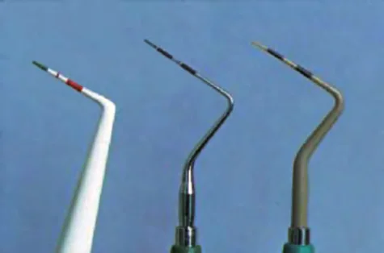

نسخه استخراجشده؛ ترجمه یا تأیید علمی انجام نشده است. وضعیت: captured
پروب پریودنتال مهمترین ابزار تشخیصی توست. انواع رایج را باید بشناسی:

| پروب | علامتگذاری (میلیمتر) | ویژگی |
|---|---|---|
| ویلیامز | ۱، ۲، ۳، ۵، ۷، ۸، ۹، ۱۰ | کلاسیک؛ فاصله ۴ و ۶ حذف شده تا خوانایی بالا برود |
| UNC-15 | هر ۱ میلیمتر تا ۱۵ | نوارهای مشکی در ۵، ۱۰ و ۱۵؛ دقیقترین برای تحقیق |
| میشیگان-O | ۳، ۶، ۸ | باریک؛ مناسب نواحی تنگ |
| CPI / WHO | نوار رنگی ۳٫۵ تا ۵٫۵ | نوک گرد ۰٫۵ میلیمتری؛ برای غربالگری و PSR |
| نیبرز | بدون درجهبندی دقیق | خمیده؛ اختصاصی سنجش فورکیشن |
⚠️ نکته: پروب WHO نوک گرد دارد تا از نفوذ بیش از حد و آسیب به بافت جلوگیری کند؛ به همین دلیل برای غربالگری جمعیتی طراحی شده است.
حدود ۰٫۲۵ نیوتن (تقریباً ۲۵ گرم) — معادل فشاری که با آن میتوانی بدون درد زیر ناخنت را لمس کنی.
⚠️ نیروی بیشتر، عمق را بیشبرآورد میکند؛ یعنی عددی میسازی که واقعی نیست.
پروب را بهآرامی وارد شیار کن و با حرکات کوچک بالا و پایین، در امتداد سطح دندان «قدم بزن». عمق را در تمام مسیر بسنج نه فقط در یک نقطه.
پروب باید تا حد امکان موازی محور طولی دندان باشد.
استثنا: در ناحیه بیندندانی، پروب را کمی به سمت نقطه تماس مایل کن تا به عمیقترین نقطه زیر کول برسی.
مزیوباکال، میدباکال، دیستوباکال، مزیولینگوال، میدلینگوال، دیستولینگوال.
📌 ثبت فقط بیشترین عدد هر ناحیه انجام میشود، نه میانگین.
وضعیت التهاب: مهمترین منبع خطا. در بافت ملتهب، پروب از اپیتلیوم اتصالی عبور کرده و وارد بافت همبند میشود؛ یعنی عدد بیشبرآورد میشود. پس از درمان و بهبود، همان ناحیه عدد کمتری میدهد — بخشی از این کاهش «واقعی» نیست بلکه ناشی از بهبود مقاومت بافت است.
جرم زیرلثهای: پروب را منحرف میکند و عمق را کمبرآورد میکند.
کانتور ترمیم یا لبه اضافی: مسیر پروب را میبندد.
زاویه نادرست پروب
تفاوت بین معاینهکنندگان: خطای اندازهگیری معمول حدود ±۱ میلیمتر است.
تغییر نوع پروب: الگوی درجهبندی و قطر نوک در پروبهای مختلف یکسان نیست؛ در پایش یک بیمار همیشه با یک نوع پروب کار کن، وگرنه تغییر ابزار را با تغییر بیماری اشتباه میگیری.
| وضعیت بافت | محل توقف پروب |
|---|---|
| سلامت | در سطح یا کمی بالاتر از اپیتلیوم اتصالی |
| التهاب | از اپیتلیوم اتصالی عبور و وارد بافت همبند |
| پس از درمان | بالاتر از اپیتلیوم اتصالی متوقف میشود |
⚠️ اشتباه رایج ۱: نیروی استاندارد ۰٫۲۵ نیوتن است.
⚠️ اشتباه رایج ۲: جرم عمق را کمبرآورد میکند اما التهاب آن را بیشبرآورد.
⚠️ اشتباه رایج ۳: پروب نیبرز برای فورکیشن است، نه سنجش عمق پاکت.